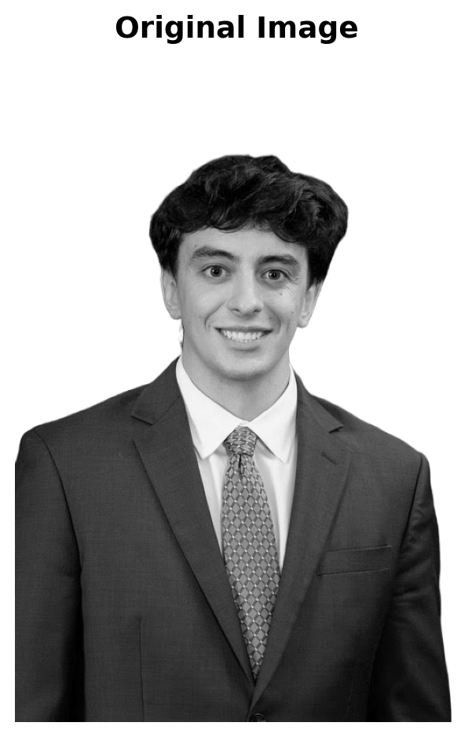
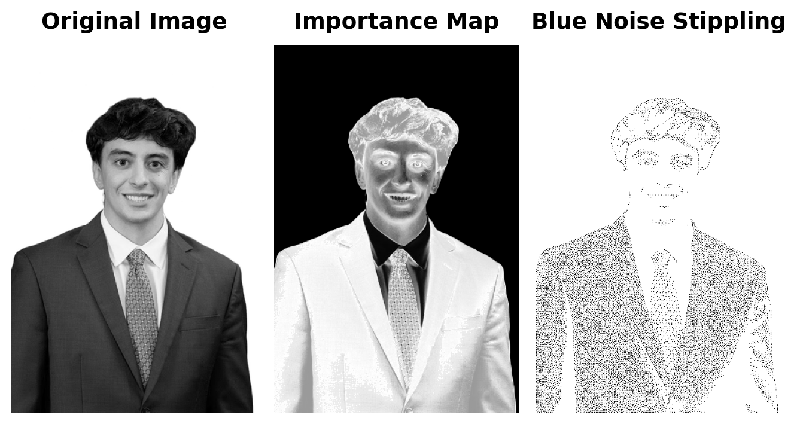
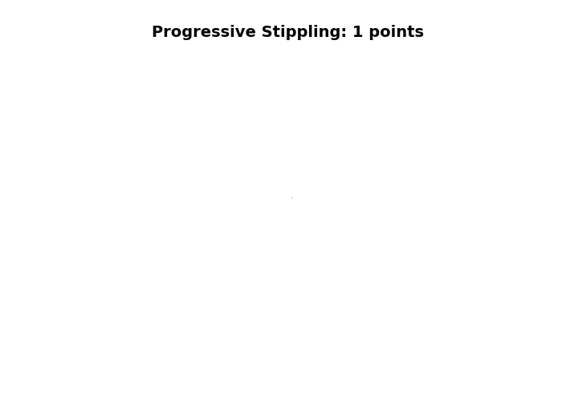

Image shape: (752, 501)
Image size: 752x501 pixelsA Modified Void-and-Cluster Algorithm for Image Stippling
This project presents an implementation of blue noise stippling, a technique that converts images into aesthetically pleasing patterns of dots (stipples) that preserve the visual information of the original image. The method uses a modified “void and cluster” algorithm that combines importance sampling with blue noise distribution properties to create stippling patterns that are both visually accurate and spatially well-distributed.
Objective: Convert a photograph into an aesthetically pleasing pattern of dots that preserves the visual information of the original image while maintaining optimal spatial distribution.
Method: This implementation uses a modified void-and-cluster algorithm that: 1. Creates an importance map identifying visually important regions 2. Uses a toroidal (periodic) Gaussian kernel for repulsion to ensure blue noise properties 3. Iteratively selects points with minimum energy 4. Balances image content importance with blue noise spatial distribution
Blue noise stippling is a technique for converting images into a pattern of dots (stipples) that preserves the visual information of the original image while creating an aesthetically pleasing, evenly distributed pattern. This method follows the approach described by Bart Wronski.
The method uses a modified “void and cluster” algorithm that combines importance sampling with blue noise distribution properties to create stippling patterns that are both visually accurate and spatially well-distributed. This version uses smooth extreme downweighting that selectively downweights very dark and very light tones while preserving mid-tones, creating a more balanced distribution of stipples across the image.
Blue noise stippling is a method of drawing an image using small dots that are spread out evenly but still show light and dark areas correctly. The darker parts of the picture have more dots placed closer together, while the lighter parts have fewer dots that are farther apart. What makes it “blue noise” is that the dots don’t form visible patterns or clumps. Instead, they are randomly placed but still look balanced. To make this happen, a computer usually starts by placing dots at random and then moves them around until the spacing looks smooth and even. The result is a picture that appears natural when viewed from a distance. The shading is created from the difference in how the dots are arranged.
The following section loads and preprocesses the input image for stippling. The image is converted to grayscale and normalized for processing.

Image shape: (752, 501)
Image size: 752x501 pixelsBefore applying the stippling algorithm, we create an importance map that identifies which regions of the image should receive more stipples. The importance map is computed by:
The stippling algorithm uses a modified void-and-cluster approach that:
Before generating the stippling pattern, the image is resized if necessary to optimize processing speed, and the importance map is computed.
The stippling algorithm is applied to create the blue noise stippling pattern using the preprocessed image and importance map.
The following visualization compares the original image, the importance map, and the final stippled version.

A progressive animation demonstrates how the stippled image develops as points are added sequentially. Frames are generated at increments of 100 points to show the evolution of the pattern.
The following animation shows the progressive build-up of the stippling pattern for the processed image:

[Add your explanation of why the algorithm creates aesthetically pleasing patterns here. Consider discussing:
]
The modified void-and-cluster algorithm successfully converts the input image into a blue noise stippling pattern that preserves the essential visual information while creating an aesthetically pleasing distribution of dots. The algorithm’s key strengths include:
Spatial Distribution: The toroidal Gaussian kernel ensures blue noise properties, resulting in an even distribution of points without clustering or visible patterns.
Content Preservation: The importance map allows the algorithm to place more stipples in darker, more visually important regions while maintaining the overall image structure.
Adaptive Processing: The smooth extreme downweighting and mid-tone boost create a balanced distribution that avoids over-saturation in extreme dark or light areas.
The implementation uses Python with NumPy for efficient array operations and PIL/Pillow for image processing. The algorithm processes images by:
The final stippled image demonstrates successful preservation of the original image’s visual structure while creating an artistic, dot-based representation. The progressive animation effectively illustrates how the pattern develops as points are added, showing the algorithm’s iterative refinement process.
This implementation successfully demonstrates blue noise stippling using a modified void-and-cluster algorithm. The results show that the technique effectively balances visual accuracy with spatial distribution, creating aesthetically pleasing stippled images that preserve the essential information of the original photograph.